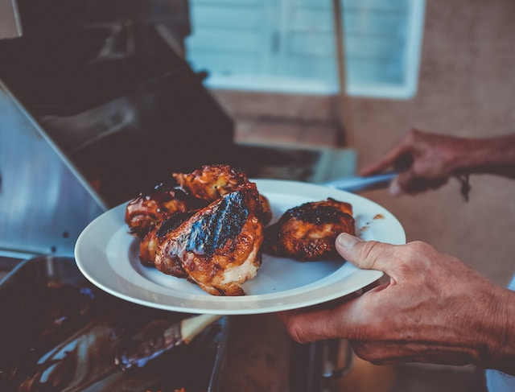

Chicken

Description
This is a recipes for chicken
Ingredients
- Chicken thighs
- Olive oil
- Seasonings (salt, pepper, thyme)
Instructions
- Heat cast iron pan to medium high. Add oil.
- Add chicken to pan, skin side down until brown
- Cook the other side until brown
- Put entire pan into over and cook for 15 minutes at 350 degrees